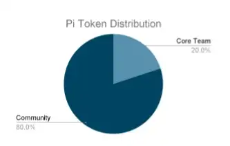
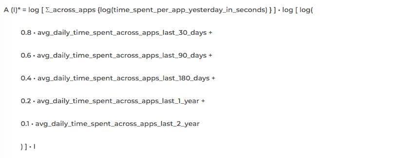
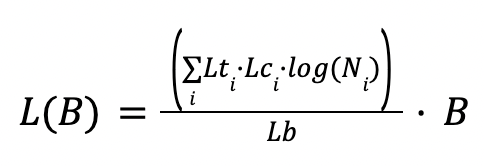

The December 2021 Whitepaper chapters “Token Model and Mining” and “Roadmap” were released as an addendum to the original 2019 Whitepaper, with new information on Mainnet. The original March 2019 Whitepaper may need updates to its content, so please refer to the latest Pi Network communications for up-to-date information. Both Whitepapers are subject to change based on data collected during the Enclosed Network period of Mainnet.
Pi Whitepaper
Whitepaper: March 2019 Original
Preface
As the world becomes increasingly digital, cryptocurrency is a next natural step in the evolution of money. Pi is the first digital currency for everyday people, representing a major step forward in the adoption of cryptocurrency worldwide.
Our Mission: Build a cryptocurrency and smart contracts platform secured and operated by everyday people.
Our Vision: Build the world’s most inclusive peer-to-peer ecosystem and online experience, fueled by Pi, the world’s most widely used cryptocurrency.
DISCLAIMER for more advanced readers: Because Pi’s mission is to be inclusive as possible, we’re going to take this opportunity to introduce our blockchain newbies to the rabbit hole 🙂
Introduction: Why cryptocurrencies matter
Currently, our everyday financial transactions rely upon a trusted third party to maintain a record of transactions. For example, when you do a bank transaction, the banking system keeps a record & guarantees that the transaction is safe & reliable. Likewise, when Cindy transfers $5 to Steve using PayPal, PayPal maintains a central record of $5 dollars debited from Cindy’s account and $5 credited to Steve’s. Intermediaries like banks, PayPal, and other members of the current economic system play an important role in regulating the world’s financial transactions.
However, the role of these trusted intermediaries also has limitations:
- Unfair value capture. These intermediaries amass billions of dollars in wealth creation (PayPal market cap is ~$130B), but pass virtually nothing onto their customers – the everyday people on the ground, whose money drives a meaningful proportion of the global economy. More and more people are falling behind.
- Fees. Banks and companies charge large fees for facilitating transactions. These fees often disproportionately impact lower-income populations who have the fewest alternatives.
- Censorship. If a particularly trusted intermediary decides that you should not be able to move your money, it can place restrictions on the movement of your money.
- Permissioned. The trusted intermediary serves as a gatekeeper who can arbitrarily prevent anybody from being part of the network.
- Pseudonymous. At a time when the issue of privacy is gaining greater urgency, these powerful gatekeepers can accidentally disclose — or force you to disclose — more financial information about yourself than you may want.
Bitcoin’s “peer-to-peer electronic cash system,” launched in 2009 by an anonymous programmer (or group) Satoshi Nakamoto, was a watershed moment for the freedom of money. For the first time in history, people could securely exchange value, without requiring a third party or trusted intermediary. Paying in Bitcoin meant that people like Steve and Cindy could pay each other directly, bypassing institutional fees, obstructions, and intrusions. Bitcoin was truly a currency without boundaries, powering and connecting a new global economy.
Introduction To Distributed Ledgers
Bitcoin achieved this historical feat by using a distributed record. While the current financial system relies on the traditional central record of truth, the Bitcoin record is maintained by a distributed community of “validators,” who access and update this public ledger. Imagine the Bitcoin protocol as a globally shared “Google Sheet” that contains a record of transactions, validated and maintained by this distributed community.
The breakthrough of Bitcoin (and general blockchain technology) is that, even though the record is maintained by a community, the technology enables them to always reach consensus on truthful transactions, insuring that cheaters cannot record false transactions or overtake the system. This technological advancement allows for the removal of the centralized intermediary, without compromising transactional financial security.
Benefits Of Distributed Ledgers
In addition to decentralization, bitcoin, or cryptocurrencies in general, share a few nice properties that make money smarter and safer, although different cryptocurrencies may be stronger in some properties and weaker in others, based on different implementations of their protocols. Cryptocurrencies are held in cryptographic wallets identified by a publicly accessible address, and is secured by a very strong privately held password, called the private key. This private key cryptographically signs transactions and is virtually impossible to create fraudulent signatures. This provides security and unseizability. Unlike traditional bank accounts that can be seized by government authorities, the cryptocurrency in your wallet can never be taken away by anyone without your private key. Cryptocurrencies are censorship-resistant due to the decentralized nature because anyone can submit transactions to any computer in the network to get recorded and validated. Cryptocurrency transactions are immutable because each block of transactions represents a cryptographic proof (a hash) of all the previous blocks that existed before that. Once someone sends you money, they cannot steal back their payment to you (i.e., no bouncing checks in blockchain). Some of the cryptocurrencies can even support atomic transactions. “Smart contracts” built atop these cryptocurrencies do not merely rely on law for enforcement, but directly enforced through publicly auditable code, which make them trustless and can potentially get rid of middlemen in many businesses, e.g. Escrow for real estate.
Securing Distributed Ledgers (Mining)
One of the challenges of maintaining a distributed record of transactions is security — specifically, how to have an open and editable ledger while preventing fraudulent activity. To address this challenge, Bitcoin introduced a novel process called Mining (using the consensus algorithm “Proof of Work”) to determine who is “trusted” to make updates to the shared record of transactions.
You can think of the mining as a type of economic game that forces “Validators” to prove their merit when trying to add transactions to the record. To qualify, Validators must solve a series of complex computational puzzles. The Validator who solves the puzzle first is rewarded by being allowed to post the latest block of transactions. Posting the latest block of transactions allows Validators to “mine” a Block Reward – currently 12.5 bitcoin (or ~$40,000 at the time of writing).
This process is very secure, but it demands enormous computing power and energy consumption as users essentially “burn money” to solve the computational puzzle that earns them more Bitcoin. The burn-to-reward ratio is so punitive that it is always in Validators’ self-interest to post honest transactions to the Bitcoin record.
Problem: Centralization of power and money put 1st Generation Cryptocurrencies out of reach
In the early days of Bitcoin, when only a few people were working to validate transactions and mining the first blocks, anyone could earn 50 BTC by simply running Bitcoin mining software on their personal computer. As the currency began to gain in popularity, clever miners realized that they could earn more if they had more than one computer working to mine.
As Bitcoin continued to increase in value, entire companies began to spring up to mine. These companies developed specialized chips (“ASICs”) and constructed huge farms of servers using these ASIC chips to mine Bitcoin. The emergence of these enormous mining corporations, known drove the Bitcoin Gold Rush, making it very difficult for everyday people to contribute to the network and get rewarded. Their efforts also began consuming increasingly large amounts of computing energy, contributing to mounting environmental issues around the world.
The ease of mining Bitcoin and the subsequent rise of Bitcoin mining farms quickly produced a massive centralization of production power and wealth in Bitcoin’s network. To provide some context, 87% of all Bitcoins are now owned by 1% of their network, many of these coins were mined virtually free in their early days. As another example, Bitmain, one of Bitcoin’s biggest mining operations has earned billions in revenue and profits.
The centralization of power in Bitcoin’s network makes it very difficult and expensive for the average person. If you want to acquire Bitcoin, your easiest options are to:
- Mine It Yourself. Just hook up the specialized hardware (here’s a rig on Amazon, if you’re interested!) and go to town. Just know that since you’ll be competing against massive server farms from across the world, consuming as much energy as the country of Switzerland, you won’t be able to mine much
- Buy Bitcoin on an exchange. Today, you can buy Bitcoin at a unit price of $3,500 / coin at the time of writing (note: you can buy the fractional amount of Bitcoin!) Of course, you would also be taking on substantial risk in doing so as the price of Bitcoin is quite volatile.
Bitcoin was the first to show how cryptocurrency could disrupt the current financial model, giving people the ability to make transactions without having a third party in the way. The increase in freedom, flexibility, and privacy continues to drive the inevitable march toward digital currencies as a new norm. Despite its benefits, Bitcoin’s (likely unintended) concentration of money and power present a meaningful barrier to mainstream adoption. As Pi’s core team has conducted research to try to understand why people are reluctant to enter the cryptocurrency space. People consistently cited the risk of investing/mining as a key barrier to entry.
Solution: Pi - Enabling mining on mobile phones
After identifying these key barriers to adoption, the Pi Core Team set out to find a way that would allow everyday people to mine (or earn cryptocurrency rewards for validating transactions on a distributed record of transactions). As a refresher, one of the major challenges that arises with maintaining a distributed record of transactions is ensuring that updates to this open record are not fraudulent. While Bitcoin’s process for updating its record is proven (burning energy / money to prove trustworthiness), it is not very user (or planet!) friendly. For Pi, we introduced the additional design requirement of employing a consensus algorithm that would also be extremely user friendly and ideally enable mining on personal computers and mobile phones.
In comparing existing consensus algorithms (the process that records transactions into a distributed ledger), the Stellar Consensus Protocol emerges as the leading candidate to enable user-friendly, mobile-first mining. Stellar Consensus Protocol(SCP) was architected by David Mazières a professor of Computer Science at Stanford who also serves as Chief Scientist at the Stellar Development Foundation. SCP uses a novel mechanism called Federated Byzantine Agreements to ensure that updates to a distributed ledger are accurate and trustworthy. SCP is also deployed in practice through the Stellar blockchain that has been operating since 2015.
A Simplified Introduction To Consensus Algorithms
Before jumping to introducing the Pi consensus algorithm, it helps to have a simple explanation on what a consensus algorithm does for a blockchain and the types of consensus algorithms that today’s blockchain protocols generally use, e.g. Bitcoin and SCP. This section is explicitly written in a oversimplified manner for the sake of clarity, and is not complete. For higher accuracy, see the section Adaptations to SCP below and read the stellar consensus protocol paper.
A blockchain is a fault-tolerant distributed system that aims to totally order a list of blocks of transactions. Fault-tolerant distributed systems is an area of computer science that has been studied for many decades. They are called distributed systems because they do not have a centralized server but instead they are composed of a decentralized list of computers (called nodes or peers) that need to come to a consensus as to what is the content and total ordering of blocks. They are also called fault-tolerant because they can tolerate a certain degree of faulty nodes into the system (e.g. up to 33% of nodes can be faulty and the overall system continues to operate normally).
There are two broad categories of consensus algorithms: The ones that elect a node as the leader who produces the next block, and the ones where there is no explicit leader but all nodes come to a consensus of what the next block is after exchanging votes by sending computer messages to each other. (Strictly speaking the last sentence contains multiple inaccuracies, but it helps us explain the broad strokes.)
Bitcoin uses the first type of consensus algorithm: All bitcoin nodes are competing against each other in solving a cryptographic puzzle. Because the solution is found randomly, essentially the node that finds the solution first, by chance, is elected the leader of the round who produces the next block. This algorithm is called “Proof of work” and results in a lot of energy consumption.
A Simplified Introduction To Stellar Consensus Protocol
Pi uses the other type of consensus algorithms and is based on the Stellar Consensus Protocol (SCP) and an algorithm called Federated Byzantine Agreement (FBA). Such algorithms don’t have energy waste but they require exchanging many network messages in order for the nodes to come to “consensus” on what the next block should be. Each node can independently determine if a transaction is valid or not, e.g. authority of making the transition and double spending, based on the cryptographic signature and the transaction history. However, for a network of computers to agree on which transactions to record in a block and the order of these transactions and blocks, they need to message each other and have multiple rounds of voting to come to consensus. Intuitively, such messages from different computers in the network about which block is the next would look like the following: “I propose we all vote for block A to be next”; “I vote for block A to be the next block”; “I confirm that the majority of the nodes I trust also voted for block A”, from which the consensus algorithm enables this node to conclude that “A is the next block; and there could be no block other than A as the next block”; Even though the above voting steps seem a lot, the internet is adequately fast and these messages are lightweight, thus such consensus algorithms are more lightweight than Bitcoin’s proof of work. One major representative of such algorithms is called Byzantine Fault Tolerance (BFT). Several of the top blockchains today are based on variants of BFT, such as NEO and Ripple.
One major criticism of BFT is that it has a centralization point: because voting is involved, the set of nodes participating in the voting “quorum” are centrally determined by the creator of the system in its beginning. The contribution of FBA is that, instead of having one centrally determined quorum, each node sets their own “quorum slices”, which will in turn form different quorums. New nodes can join the network in a decentralized way: they declare the nodes that they trust and convince other nodes to trust them, but they don’t have to convince any central authority.
SCP is one instantiation of FBA. Instead of burning energy like in Bitcoin’s proof of work consensus algorithm, SCP nodes secure the shared record by vouching for other nodes in the network as trustworthy. Each node in the network builds a quorum slice, consisting of other nodes in the network that they deem to be trustworthy. Quorums are formed based on its members quorum slices, and a validator will only accept new transactions if and only if a proportion of nodes in their quorums will also accept the transaction. As validators across the network construct their quorums, these quorums help nodes to reach consensus about transactions with guarantee on security. You can learn more about the Stellar Consensus Protocol by checking out this technical summary of SCP.
Pi’s Adaptations to Stellar Consensus Protocol (SCP)
Pi’s consensus algorithm builds atop SCP. SCP has been formally proven and is currently implemented within the Stellar Network. Unlike Stellar Network consisting mostly of companies and institutions (e.g., IBM) as nodes, Pi intends to allow devices of individuals to contribute on the protocol level and get rewarded, including mobile phones, laptops and computers. Below is an introduction on how Pi applies SCP to enabling mining by individuals.
There are four roles Pi users can play, as Pi miners. Namely:
- Pioneer. A user of the Pi mobile app who is simply confirming that they are not a “robot” on a daily basis. This user validates their presence every time they sign in to the app. They can also open the app to request transactions (e.g. make a payment in Pi to another Pioneer)
- Contributor. A user of the Pi mobile app who is contributing by providing a list of pioneers he or she knows and trusts. In aggregate, Pi contributors will build a global trust graph.
- Ambassador. A user of the Pi mobile app who is introducing other users into Pi network.
- Node. A user who is a pioneer, a contributor using the Pi mobile app, and is also running the Pi node software on their desktop or laptop computer. The Pi node software is the software that runs the core SCP algorithm, taking into account the trust graph information provided by the Contributors.
A user can play more than one of the above roles. All roles are necessary, thus all roles are rewarded with newly minted Pi on a daily basis as long as they participated and contributed during that given day. In the loose definition of a “miner” being a user who receives newly minted currency as a reward for contributions, all four roles are considered to be Pi miners. We define“mining” more broadly than its traditional meaning equated to executing proof of work consensus algorithm as in Bitcoin or Ethereum.
First of all, we need to emphasize that the Pi Node software has not been released yet. So this section is offered more as an architectural design and as a request to solicit comments from the technical community. This software will be fully open source and it will also heavily depend on stellar-core which is also open source software, available here. This means that anyone in the community will be able to read, comment and propose improvements on it. Below are the Pi proposed changes to SCP to enable mining by individual devices.
Nodes
For readability, we define as a correctly connected node to be what the SCP paper refers to as an intact node. Also, for readability, we define as the main Pi network to be the set of all intact nodes in the Pi network. The main task of each Node is to be configured to be correctly connected to the main Pi network. Intuitively, a node being incorrectly connected to the main network is similar to a Bitcoin node not being connected to the main bitcoin network.
In SCP’s terms, for a node to get correctly connected means that this node must chose a “quorum slice” such that all resulting quorums that include this node intersect with the existing network’s quorums. More precisely, a node vn+1 is correctly connected to a main network N of n already correctly connected nodes (v1, v2, …, vn) if the resulting system N’ of n+1 nodes (v1, v2, …, vn+1) enjoys quorum intersection. In other words, N’ enjoys quorum intersection iff any two of its quorums share a node. — i.e., for all quorums U1 and U2, U1∩U2 ≠ ∅.
The main contribution of Pi over the existing Stellar consensus deployment is that it introduces the concept of a trust graph provided by the Pi Contributors as information that can be used by the Pi nodes when they are setting up their configurations to connect to the main Pi network.
When picking their quorum slices, these Nodes must take into consideration the trust graph provided by the Contributors, including their own security circle. To assist in this decision, we intend to provide auxiliary graph analysis software to assist users running Nodes to make as informed decisions as possible. This software’s daily output will include:
- a ranked list of nodes ordered by their distance from the current node in the trust graph; a ranked list of nodes based a pagerank analysis of nodes in the trust graph
- a list of nodes reported by the community as faulty in any way a list of new nodes seeking to join the network
- a list of most recent articles from the web on the keyword “misbehaving Pi nodes” and other related keywords; a visual representation of Nodes comprising the Pi network similar to what is shown in StellarBeat Quorum monitor
- a quorum explorer similar to QuorumExplorer.com
- a simulation tool like the one in StellarBeat Quorum monitor that shows the expected resulting impacts to this nodes’ connectivity to the Pi network when the current node’s configuration changes.
An interesting research problem for future work is to develop algorithms that can take into consideration the trust graph and suggest each node an optimal configuration, or even set that configuration automatically. On the first deployment of the Pi Network, while users running Nodes can update their Node configuration at any time, they will be prompted to confirm their configurations daily and asked to update them if they see fit.
Mobile app users
When a Pioneer needs to confirm that a given transaction has been executed (e.g. that they have received Pi) they open the mobile app. At that point, the mobile app connects to one or more Nodes to inquire if the transaction has been recorded on the ledger and also to get the most recent block number and hash value of that block. If that Pioneer is also running a Node the mobile app connects to that Pioneer’s own node. If the Pioneer is not running a node, then the app connects to multiple nodes and to cross check this information. Pioneers will have the ability select which nodes they want their apps to connect to. But to make it simple for most users, the app should have a reasonable default set of nodes, e.g. a number of nodes closest to the user based on the trust graph, along with a random selection of nodes high in pagerank. We ask for your feedback on how the default set of nodes for mobile Pioneers should be selected.
Mining rewards
A beautiful property of the SCP algorithm is that it is more generic than a blockchain. It coordinates consensus across a distributed system of Nodes. This means that the same core algorithm is not only used every few seconds to record new transactions in new blocks, but also it can be used to periodically run more complex computations. For example, once a week, the stellar network is using it to compute inflation on the stellar network and allocate the newly minted tokens proportionally to all stellar coin holders (Stellar’s coin is called lumens). In a similar manner, the Pi network employs SCP once a day to compute the network-wide new Pi distribution across all Pi miners (pioneers, contributors, ambassadors, nodes) who actively participated in any given day. In other words, Pi mining rewards are computed only once daily and not on every block of the blockchain.
For comparison Bitcoin allocates mining rewards on every block and it give all of the reward to the miner who was lucky enough to be able to solve a computationally intensive randomized task. This reward in Bitcoin currently 12.5 Bitcoin (~$40K) is given to only one miner every 10 minutes. This makes it extremely unlikely for any given miner to ever get rewards. As a solution to that, bitcoin miners are getting organized in centralized mining pools, which all contribute processing power, increasing the likelihood of getting rewards, and eventually sharing proportionally those rewards. Mining pools are not only points of centralization, but also their operators get cuts reducing the amount going to individual miners. In Pi, there is no need for mining pools, since once a day everyone who contributed get a meritocratic distribution of new Pi.
Transaction fees
Similar to Bitcoin transactions, fees are optional in the Pi network. Each block has a certain limit of how many transactions can be included in it. When there is no backlog of transactions, transactions tend to be free. But if there are more transactions, nodes order them by fee, with highest-fee-transactions at the top and pick only the top transactions to be included in the produced blocks. This makes it an open market. Implementation: Fees are proportionally split among Nodes once a day. On every block, the fee of each transaction is transferred into a temporary wallet from where in the end of the day it is distributed to the active miners of the day. This wallet has an unknown private key. Transactions in and out of that wallet are forced by the protocol itself under the consensus of all nodes in the same way the consensus also mints new Pi every day.
Limitations and future work
SCP has been extensively tested for several years as part of the Stellar Network, which at the time of this writing is the ninth largest cryptocurrency in the world. This gives us a quite large degree of confidence in it. One ambition of the Pi project is to scale the number of nodes in the Pi network to be larger than the number of nodes in the Stellar network to allow more everyday users to participate in the core consensus algorithm. Increasing the number of nodes, will inevitably increase the number of network messages that must be exchanged between them. Even though these messages are much smaller than an image or a youtube video, and the Internet today can reliably transfer videos quickly, the number of messages necessary increases with the number of participating nodes, which can become bottleneck to the speed of reaching consensus. This will ultimately slow down the rate, at which new blocks and new transactions are recorded in the network. Thankfully, Stellar is currently much faster than Bitcoin. At the moment, Stellar is calibrated to produce a new block every 3 to 5 seconds, being able to support thousands of transactions per second. By comparison, Bitcoin produces a new block every 10 minutes. Moreover, due to Bitcoin’s lack in the safety guarantee, Bitcoin’s blockchain in rare occasions can be overwritten within the first hour. This means that a user of Bitcoin must wait about 1 hour before they can be sure that a transaction is considered final. SCP guarantees safety, which means after 3-5 seconds one is certain about a transaction. So even with the potential scalability bottleneck, Pi expects to achieve transaction finality faster than Bitcoin and possibly slower than Stellar, and process more transactions per second than Bitcoin and possibly fewer than Stellar.
While scalability of SCP is still an open research problem. There are multiple promising ways one could speed things up. One possible scalability solution is bloXroute. BloXroute proposes a blockchain distribution network (BDN) that utilizes a global network of servers optimized for network performance. While each BDN is centrally controlled by one organization, they offer a provably neutral message passing acceleration. I.e. BDNs can only serve all nodes fairly without discrimination as messages are encrypted. This means the BDN does not know where messages come from, where they go, or what is inside. This way Pi nodes can have two message passing routes: A fast one through BDN, which is expected to be reliable most of the time, and its original peer-to-peer message passing interface that is fully decentralized and reliable but is slower. The intuition of this idea is vaguely similar to caching: The cache is place where a computer can access data very quickly, speeding the average computation, but it is not guaranteed to always have every needed piece of information. When the cache misses, the computer is slowed down but nothing catastrophic happens. Another solution can be using secure acknowledgment of multicast messages in open Peer-to-Peer networks to speed up message propagation among peers.
Pi Economic Model: Balancing Scarcity and Access
One of Bitcoin’s most impressive innovations is its marriage of distributed systems with economic game theory.
Pros
Fixed Supply
Bitcoin’s economic model is simple. There will only ever be 21 million Bitcoin in existence. This number is set in code. With only 21M to circulate among 7.5B people around the world, there is not enough Bitcoin to go around. This scarcity is one of most important drivers of Bitcoin’s value.
Decreasing Block Reward
Bitcoin’ distribution scheme, pictured below, further enforces this sense of scarcity. The Bitcoin block mining reward halves every 210,000 blocks (approximately every ~4 years.) In its early days, the Bitcoin block reward was 50 coins. Now, the reward is 12.5, and will further decrease to 6.25 coins in May 2020. Bitcoin’s decreasing rate of distribution means that, even as awareness of the currency grows, there is less to actually mine.
Cons
Inverted Means Uneven
Bitcoin’s inverted distribution model (less people mining more in the beginning, and more people mine less today) is one of the primary contributors to its uneven distribution. With so much Bitcoin in the hands of a few early adopters, new miners are “burning” more energy for less bitcoin.
Hoarding Inhibits Use As A Medium Of Exchange
Although Bitcoin was released as a “peer to peer electronic cash” system, the relative scarcity of Bitcoin has impeded Bitcoin’s goal of serving as a medium exchange. Bitcoin’s scarcity has led to its perception as a form of “digital gold” or a digital store of value. The result of this perception is that many Bitcoin holders are unwilling to spend Bitcoin on day-to-day expenses.
The Pi Economic Model
Pi, on the other hand, seeks to strike a balance between creating a sense of scarcity for Pi, while still ensuring that a large amount does not accumulate into a very small number of hands. We want to make sure our users mine more Pi as they make contributions to the network. Pi’s goal is to build an economic model that is sophisticated enough to achieve and balance these priorities while remaining intuitive enough for people to use.
Pi’s economic model design requirements:
- Simple: Build an intuitive and transparent model
- Fair distribution: Give a critical mass of the world’s population access to Pi
- Scarcity: Create a sense of scarcity to sustain Pi’s price over time
- Meritocratic mining: Reward contributions to build and sustain the network
Pi – Token Supply
Token Emission Policy
- Total Max Supply = M + R + D
- M = total mining rewards
- R = total referral rewards
- D = total developer rewards
- M = ∫ f(P) dx where f is a logarithmically declining function
- P = Population number (e.g., 1st person to join, 2nd person to join, etc.)
- R = r * M
- r = referral rate (50% total or 25% for both referrer and referee)
- D = t * (M + R)
- t = developer reward rate (25%)
M – Mining Supply (Based on fixed mining supply minted per person)
In contrast to Bitcoin which created a fixed supply of coins for the entire global population, Pi creates a fixed supply of Pi for each person that joins the network up to the first 100 Million participants. In other words, for each person that joins the Pi Network, a fixed amount of Pi is pre-minted. This supply is then released over the lifetime of that member based on their level of engagement and contribution to network security. The supply is released using an exponentially decreasing function similar to Bitcoin’s over the member’s lifetime.
R – Referral Supply (Based on fixed referral reward minted per person and shared b/w referrer and referee)
In order for a currency to have value, it must be widely distributed. To incentivize this goal, the protocol also generates a fixed amount of Pi that serves as a referral bonus for both the referrer and the referee (or both parent and offspring 🙂 This shared pool can be mined by both parties over their lifetime – when both parties are actively mining. Both referrer and referee are able to draw upon this pool in order to avoid exploitative models where referrers are able to “prey” on their referees. The referral bonus serves as a network-level incentive to grow the Pi Network while also incentivizing engagement among members in actively securing the network.
D – Developer Reward Supply (Additional Pi minted to support ongoing development)
Pi will fund its ongoing development with a “Developer Reward” that is minted alongside each Pi coin that is minted for mining and referrals. Traditionally, cryptocurrency protocols have minted a fixed amount of supply that is immediately placed into treasury. Because Pi’s total supply is dependent on the number of members in the network, Pi progressively mints its developer reward as the network scales. The progressive minting of Pi’s developer reward is meant to align the incentives of Pi’s contributors with the overall health of the network.
f is a logarithmically decreasing function – early members mine more
While Pi seeks to avoid extreme concentrations of wealth, the network also seeks to reward earlier members and their contributions with a relatively larger share of Pi. When networks such as Pi are in their early days, they tend to provide a lower utility to participants. For example, imagine having the very first telephone in the world. It would be a great technological innovation but not extremely useful. However, as more people acquire telephones, each telephone holder gets more utility out of the network. In order to reward people that come to the network early, Pi’s individual mining reward and referral rewards decrease as a function of the number of people in the network. In other words, there is a certain amount of Pi that is reserved for each “slot” in the Pi Network.
Utility: Pooling and monetizing our time online
Today, everyone is sitting on a veritable treasure trove of untapped resources. Each of us spend hours day on our phones. While on our phones, each of our views, posts or clicks creates extraordinary profits for large corporations. At Pi, we believe that people have the right to capture value created from their resources.
We all know that we can do more together than we can alone. On today’s web, massive corporations like Google, Amazon, Facebook have immense leverage against individual consumers. As a result, they are able to capture the lionshare of value created by individual consumers on the web. Pi levels the playing field by allowing its members to pool their collective resources so they can get a share of the value that they create.
The graphic below is the Pi Stack, where we see particularly promising opportunities for helping our members capture value. Below, we go into each of these areas in more detail.
Introducing the Pi Stack – Unleashing underutilized resources

Pi Ledger And Shared Trust Graph – Scaling Trust Across The Web
One of the biggest challenges on the internet is knowing who to trust. Today, we rely on the rating systems of providers such as Amazon, eBay, Yelp, to know who we can transact with on the internet. Despite the fact that we, customers, do the hard work of rating and reviewing our peers, these internet intermediaries capture the lionshare of the value created this work.
Pi’s consensus algorithm, described above, creates a native trust layer that scales trust on the web without intermediaries. While the value of just one individual’s Security Circle is small, the aggregate of our individual security circles build a global “trust graph” that help people understand who on the Pi Network can be trusted. The Pi Network’s global trust graph will facilitate transactions between strangers that would not have otherwise been possible. Pi’s native currency, in turn, allows everyone who contributes to the security of the network to capture a share of the value they have helped create.
Pi’s Attention Marketplace – Bartering Unutilized Attention And Time
Pi allows its members to pool their collective attention to create an attention market much more valuable than any individual’s attention alone. The first application built on this layer will be a scarce social media channel currently hosted on the home screen of the application. You can think of the scarce social media channel as Instagram with one global post at a time. Pioneers can wager Pi to engage the attention of other members of the network, by sharing content (e.g., text, images, videos) or asking questions that seek to tap into the collective wisdom of the community. On the Pi Network, everyone has the opportunity to be an influencer or to tap into the wisdom of the crowd. To date, Pi’s Core Team has been using this channel to poll the community’s opinion on design choices for Pi (e.g. the community voted on the design and colors of the Pi logo.) We have received many valuable responses and feedback from the community on the project. One possible future direction is to open the attention market for any Pioneer to use Pi to post their content, while expanding the number of channels hosted on the Pi Network.
In addition to bartering attention with their peers, Pioneers may also opt into bartering with companies that are seeking their attention. The average American sees between 4,000 and 10,000 ads a day. Companies fight for our attention and pay tremendous amounts of money for it. But we, the customers, receive no value from these transactions. In Pi’s attention marketplace, companies seeking to reach Pioneers will have to compensate their audience in Pi. Pi’s advertising marketplace will be strictly opt-in only and will provide an opportunity for Pioneers to monetize one of their greatest untapped resources: their attention.
Pi’s Barter Marketplace – Build Your Personal Virtual Storefront
In addition to contributing trust and attention to the Pi Network, we expect Pioneers to be able to contribute their unique skills and services in the future. Pi’s mobile application will also serve as a Point of Sales where Pi’s members can offer their untapped goods and services via a “virtual storefront” to other members of the Pi Network. For example, a member offer up an underutilized room in their apartment for rent to other members on the Pi Network. In addition to real assets, members of the Pi Network will also be able to offer skills and services via their virtual storefronts. For example, a member of the Pi Network could offer their programming or design skills on the Pi marketplace. Overtime, the value of Pi will be supported by a growing basket of goods and services.
Pi’s Decentralized App Store – Lowering The Barrier Of Entry For Creators
The Pi Network’s shared currency, trust graph, and marketplace will be the soil for a broader ecosystem of decentralized applications. Today, anyone that wants to start an application needs to bootstrap its technical infrastructure and community from scratch. Pi’s decentralized applications store will allow Dapp developers to leverage Pi’s existing infrastructure as well as the shared resources of the community and users. Entrepreneurs and developers can propose new Dapps to the community with requests for access to the network’s shared resources. Pi will also build its Dapps with some degree of interoperability so that Dapps are able to reference data, assets, and processes in other decentralized applications.
Governance - Cryptocurrency for and by the people
Challenges w/ 1st Generation Governance models
Trust is the foundation of any successful monetary system. One of the most important factors engendering trust is governance or the process by which changes are implemented to the protocol over time. Despite its importance, governance is often one of the most overlooked aspects of cryptoeconomic systems.
First generation networks such as Bitcoin largely avoided formal (or “on-chain”) governance mechanisms in favor of informal (or “off-chain”) mechanisms arising from a combination of role and incentive design. By most measures, Bitcoin’s governance mechanisms has been quite successful, allowing the protocol to grow dramatically in scale and value since its inception. However, there have also been some challenges. The economic concentration of Bitcoin has led to a concentration of political power. The result is that everyday people can get caught in the middle of destructive battles between massive holders of Bitcoin. One of the most recent examples of this challenge has been the ongoing battle between Bitcoin and Bitcoin Cash. These civil wars can end in a fork where or where the blockchain. For token holders, hard forks are inflationary and can threaten the value of their holdings.
Pi’s Governance Model – a two-phase plan
In an article challenging the merits of on-chain governance, Vlad Zamfir, one of Ethereum’s core developers, argues that blockchain governance “is not an abstract design problem. It’s an applied social problem.” One of Vlad’s key points is that it is very difficult to design governance systems “a priori” or before observations of the particular challenges arising from a specific political system. One historical example is in the founding of the United States. The first experiment with democracy in the United States, the Articles of Confederation, failed after an eight-year experiment. The Founding Fathers of the United States were then able to draw upon the lessons of the Article of Confederation to craft the the Constitution – a much more successful experiment.
To build an enduring governance model, Pi will pursue a two-phase plan.
Provisional Governance Model (< 5M Members)
Until the network hits a critical mass of 5M members, Pi will operate under a provisional governance model. This model will most closely resemble “off-chain” governance models currently employed by protocols like Bitcoin and Ethereum, with Pi’s Core Team playing an important role in guiding the development of the protocol. However,, Pi’s Core Team will still rely heavily on the input of the community. The Pi mobile application itself is where Pi’s core team has been soliciting community input and engaging with Pioneers. Pi embraces community critiques and suggestions, which is implemented by the open-for-comments features of Pi’s landing page, FAQs and Whitepaper. Whenever people browse these materials on Pi’s websites, they can submit comment on a specific section right there to ask for questions and make suggestions. Offline Pioneer meetups that Pi’s core team have been organizing will also be an important channel for community input.
Additionally, Pi’s Core Team will develop more formal governance mechanics. One potential governance system is liquid democracy. In liquid democracy, every Pioneer will have the ability to either vote on an issue directly or to delegate their vote to another member of the network. Liquid democracy would allow for both broad and efficient membership from Pi’s community.
Pi’s “Constitutional Convention” (> 5M Members)
Upon hitting 5M members, a provisional committee will be formed based on previous contributions to the Pi Network. This committee will be responsible for soliciting and proposing suggestions from and to the wider community. It will also organize a series of on- and offline conversations where Pi’s members will be able to weigh on Pi’s long-term constitution. Given Pi’s global user base, the Pi Network will conduct these conventions at multiple locations across the world to ensure accessibility. In addition to hosting in-person conventions, Pi will also use its mobile application as a platform for allowing Pi’s member to participate in the process remotely. Whether in-person or online, Pi’s community members will have the ability to participate in the crafting Pi’s long-term governance structure.
Roadmap/Deployment Plan
Phase 1 – Design, Distribution, Trust Graph Bootstrap.
The Pi server is operating as a faucet emulating the behavior of the decentralized system as it will function once its live. During this phase improvements in the user experience and behavior are possible and relatively easy to make compared to the stable phase of the main net. All minting of coins to users will be migrated to the live net once it launches. In other words, the livenet will pre-mint in its genesis block all account holder balances generated during Phase 1, and continue operating just like the current system but fully decentralized. Pi is not listed on exchanges during this phase and it is impossible to “buy” Pi with any other currency.
Phase 2 – Testnet
Before we launch the main net, the Node software will be deployed on a test net. The test net will use the same exact trust graph as the main net but on a testing Pi coin. Pi core team will host several nodes on the test net, but will encourage more Pioneers to start their own nodes on the testnet. In fact, in order for any node to join the main net, they are advised to begin on the testnet. The test net will be run in parallel to the Pi emulator in phase one, and periodically, e.g. daily, the results from both systems will be compared to catch the gaps and misses of the test net, which will allow Pi developers to propose and implement fixes. After a thorough concurrent run of both systems, testnet will reach a state where its results consistently match the emulator’s. At that time when the community feels its ready, Pi will migrate to the next phase.
Phase 3 – Mainnet
When the community feels the software is ready for production, and it has been thoroughly tested on the testnet, the official mainnet of the Pi network will be launched. An important detail is that, in the transition into the mainnet, only accounts validated to belong to distinct real individuals will be honored. After this point, the faucet and Pi network emulator of Phase 1 will be shut down and the system will continue on its own forever. Future updates to the protocol will be contributed by the Pi developer community and Pi’s core team, and will be proposed by the committee. Their implementation and deployment will depend on nodes updating the mining software just like any other blockchains. No central authority will be controlling the currency and it will be fully decentralized. Balances of fake users or duplicate users will be discarded. This is the phase when Pi can be connected to exchanges and be exchanged for other currencies.
Whitepaper: December 2021 Chapters with March 2022 Rewards Issuance Formula
Note: These 2021 Whitepaper chapters are an addendum to the original 2019 Whitepaper, with additional information on Pi Network’s Mainnet launch.
Token Model and Mining
A well thought-out, sound token design is critical to the success of a cryptocurrency network. It has the potential to create incentives to bootstrap network formation and growth, build a utilities-driven ecosystem, and thereby support the cryptocurrency underpinning such a system. What a network incentivizes says a lot about what a network needs—for example, network growth or fundamentals-driven utility creation, a mere store of value or a medium of exchange for the cryptonative ecosystem. This chapter covers the supply of Pi and how Pioneers can mine Pi in different phases of the network, and the underlying design rationale for different mining mechanisms including to build and grow the network and to incentivize the creation of a utilities-based ecosystem. Note that Pi is a layer one cryptocurrency running on its own blockchain, which “token” here refers to.
Pi Supply
Pi Network’s vision is to build the world’s most inclusive peer-to-peer ecosystem and online experience, fueled by Pi, the world’s most widely used cryptocurrency. To deliver on this vision, it is important to grow the network and make Pi widely accessible while maintaining the security of the blockchain and long-term network incentives. While these goals have always guided the token supply model and mining design, the key distinction is: the pre-Mainnet phases focused on driving network growth and widely distributing Pi and the Mainnet phase will focus on rewarding more diverse forms of Pioneer contributions necessary for ecosystem building and utilities creation.
Pre-Mainnet Supply
In the early stages, the focus of Pi Network was on growing and securing the network. Bootstrapping to build a critical mass of participants is paramount to any network and ecosystem. Driven by the vision to make Pi the world’s most widely used cryptocurrency, distributing Pi and making it accessible globally further added to the focus on growth. Pi’s consensus algorithm relies on a global trust graph, which is aggregated from the Security Circles of individual Pioneers. It was, therefore, critical to incentivize Pioneers to form individual Security Circles. This meant a supply of tokens available as mining rewards that was not explicitly capped before Mainnet.
At the same time, maintaining long-term network incentives is important. As explained under the Mining section, the network adopted a mining mechanism where the network mining rate halves every time the network size increases by 10 times, resulting in a series of halving events when it reaches various milestones of engaged Pioneers. The next halving event based on this model would be when the network reaches 100 million engaged Pioneers. Currently, we have over 45 million Engaged Pioneers. The network also retained an option to stop all mining altogether in the event that the network reached a certain size, which was, however, yet to be determined. The option to cap the supply of Pi was not exercised before Mainnet, therefore leaving the total supply undefined.
The pre-Mainnet supply model with a mining mechanism tailored to accessibility, growth and security has bootstrapped a community of over 30 million engaged Pioneers with millions of intertwined Security Circles. A simple, accessible means to mine Pi on a mobile phone helped distribute the tokens widely throughout the world, including among populations that have been left out of the crypto revolution because of a lack of capital, knowledge or technology. In doing so, the network avoided the extreme token concentration evident in Bitcoin and other cryptocurrencies, preparing itself to become a true peer-to-peer decentralized ecosystem with a large enough volume of participants and transactions for utility creation.
Mainnet Supply
Supply fuels growth and incentivizes necessary contributions to the network to achieve an organically viable ecosystem. To that end, mining rewards will continue after Mainnet but will take diverse forms to incentivize different types of contributions, which will be explained in the Mining section below. In regard to supply, the undetermined supply due to the pre-Mainnet mining mechanism that optimizes for accessibility and growth of the network presents a few problems for the Mainnet phase, including unpredictability in planning, over-rewarding and under-rewarding of different types of necessary contributions in the new phase, and challenges to maintaining long-term network incentives. To address these issues, the network will shift from its pre-Mainnet supply model that is completely dependent on network behavior to the Mainnet supply model where there is a clear maximum supply.
The issue of unpredictability for planning in the pre-Mainnet supply model surfaced in Pi Network’s first COiNVENTION in September-October 2020 where the community panel and community submissions discussed whether mining should be halved or stopped at the network size of 10 million at the time. The diverse voices of community members presented the following dilemma for the network. If mining continued based on the ongoing (pre-Mainnet) mining mechanism, then it raised concerns with respect to Pi’s ability to provide long-term network incentives. However, if mining stopped, it would hurt the growth of the network and prevent new Pioneers joining the network as miners, thereby undermining the accessibility of Pi. Even though the network moved on from that decision and halved the mining rate at its 10 Million size, this dilemma still remains and needs to be resolved.
How the community can achieve continued growth and accessibility while addressing concerns about supply is one of the main factors considered in the design of the Mainnet token model. In addition, the undefined and unpredictable total supply makes it hard to have overall network token planning because the community as a collective and the ecosystem itself have needs to use some Pi for purposes that benefit the community and ecosystem as a whole, other than only mining rewards for individuals, as evidenced by almost every other blockchain network. Clear allocations for such collective community purposes need to be defined. Hence, given the current network size of over 30 million Pioneers and the expected volume of transactions and activities in the future, the Mainnet supply model has a clear maximum total supply of 100 billion Pi allowing incentivizations of continued growth and new contributions while removing the concerns about the unpredictability of the supply.
The supply distribution will honor the original distribution principle in the March 14, 2019 Whitepaper—the Pi community has 80% and the Pi Core Team has 20% of the total circulating supply of Pi, regardless of how much circulating supply there is in the Pi Network at any given point in time. Thus, given a total max supply of 100 billion Pi, the community will eventually receive 80 billion Pi and the Core Team will eventually receive 20 billion Pi. The following pie chart depicts the overall distribution. The Core Team’s allocation gets unlocked at the same pace as the community progressively mines more and more Pi and may be subject to additional lockup through a self-imposed mandate. This means that if the community has a portion of its allocation in circulation (for example, 25%), only the proportional amount in Core Team’s allocation (in this example, 25%) can get unlocked at most.

This distribution above shows that Pi Network does not have any allocation for ICO and is NOT running any type of crowdfunding sales of Pi. Thus, any impersonation of Pi Network or its founders to conduct a sale or listing is illegal, unauthorized and fake. These impersonators have no affiliation with Pi Core Team. Pioneers should beware of any scams and not participate. Pi can be mined freely by contributing to the ecosystem. Further, all mined Pi can only be claimed from inside the Pi App through the Mainnet dashboard and then transferred into your Pi wallet. Any website asking Pioneers to claim Pi in other means is fake.
The 80% of the community supply is further divided into: 65% allocated for all past and future Pioneer mining rewards, at address GBQQRIQKS7XLMWTTRM2EPMTRLPUGQJDLEKCGNDIFGTBZG4GL5CHHJI25 on the Mainnet, 10% reserved for supporting community organization and ecosystem building that will eventually be managed by a Pi Foundation, a non-profit organization in the future, at address GDPDSLFVGEPX6FJKGZXSTJCPTSKKAI4KBHBAQCCKQDXISW3S5SJ6MGMS, and 5% reserved for the liquidity pool to provide liquidity for Pioneers and developers in the Pi ecosystem at address GB7HLN74IIY6PENSHHBBJJXWV6IZQDELTBZNXXORDGTL75O4KC5CUXEV. The following table depicts the community supply distribution:

65 Billion Pi will be allocated for all mining rewards—both past and future mining. For past mining rewards, the rough sum of all Pi mined by all Pioneers so far (before Mainnet) is about 30 Billion Pi. However, after prohibiting the migration of the Pi in fake accounts (as discussed in the subsections “The Effect of KYC on Mainnet rewards” and “KYC Verification and Mainnet Balance Transfer” below) and depending on the speed and participation of KYC, the pre-Mainnet mined Pi at the beginning of the Open Network can be estimated to range from 10 to 20 Billion. The remaining amount in the 65 billion Pi supply for mining rewards will be distributed to Pioneers through the new Mainnet mining mechanism with conceptual yearly supply limits.
Such yearly supply limits will be determined based on a declining formula. The yearly limit may be computed on a more granular basis such as by the day or by an even smaller time epoch dynamically, depending on factors such as the lockup ratio and the remaining supply of the network at the time. Such calculation of supply limits based on granular time epochs helps achieve a better and more smooth allocation curve through time. For the sake of simplicity here, let’s suppose that the time epoch is yearly. The declining formula would mean that the yearly supply limit for the first year of new Mainnet mining will be higher than for the second year, the second year’s higher than the third year’s, and so on. The yearly declining formula and these numbers will need to be finalized closer to the launch of the Open Network period of Mainnet once we will have seen how many Pioneers have KYC’ed and how much of their mined Pi they have transferred into Mainnet.
At Mainnet, Pioneers will be rewarded for their continued contributions to the growth and security of the network. As explained in the Mining section, Pioneer rewards will be further diversified because the network needs more diverse and in-depth contributions related to app usage, node operation, and Pi lockup. Pre-Mainnet Pioneers will continue to contribute to Pi and mine from the Mainnet mining rewards, along with any new members joining the network, to ensure growth and longevity of the network.
10 Billion Pi will be reserved for community organization and ecosystem building that will be, in the future, managed by a non-profit foundation. Most decentralized networks or cryptocurrencies, even though they are decentralized, still need an organization to organize the community and set the future direction of the ecosystem, e.g., Ethereum and Stellar. The future Pi foundation will (1) organize and sponsor community events, such as developer conventions, global online events and local community meetings, (2) organize volunteers and committee members, and pay full-time employees who are dedicated to building the community and ecosystem, (3) gather opinions and feedback from the community, (4) organize future community votings, (5) build branding and protect the reputation of the network, (6) represent the network to interact with other business entities including governments, traditional banks, and traditional enterprises, or (7) fulfill any number of responsibilities for the betterness of the Pi community and ecosystem. Further, in order to build a utilities-based Pi ecosystem, various community developer programs will be designed, created and carried out by the foundation to support community developers in the forms of grants, incubations, partnerships, etc.
5 billion Pi will be reserved for liquidity pools to provide liquidity for any ecosystem participants, including Pioneers and Pi apps developers. Liquidity is key for an ecosystem to be viable, active, and healthy. If businesses or individuals want to participate in ecosystem activities (e.g., by selling and buying goods and services in Pi), they must have timely access to Pi. Without liquidity, the ecosystem will not have a healthy flow of Pi, hence harming the creation of utilities.
As discussed in the Roadmap chapter, one benefit of the Enclosed Network period of the Mainnet is to allow calibrations on the token model, if any, based on the early Mainnet results. Therefore, the token model is subject to tweaking before the Open Network period starts. Also, in the future, for the health of the network and ecosystem, the network may face questions such as whether there needs to be any inflation after the completion of the distribution of the 100 Billion Pi. The inflation may be necessary to further incentivize contributions through more mining rewards, make up for any loss of Pi from circulation due to accidents or death, provide for more liquidity, mitigate hoarding that inhibits usage and utility creation, etc. At that time, the foundation and its committees specialized in these matters will organize and guide the community to reach a conclusion on the matter in a decentralized way.
Mining Mechanism
Pi Network’s mining mechanism has been allowing Pioneers to contribute to the growth, distribution and security of the network and be rewarded in Pi meritocratically. The pre-Mainnet mining mechanism has helped the network achieve an impressive growth of over 35 million engaged members, a widely distributed currency and Testnet, and a trust graph of Security Circle aggregates that will feed the consensus algorithm of the Pi blockchain.
Looking ahead into the Mainnet phase, Pi Network needs further contributions, as well as more diverse types of contributions from all its members, to become a true ecosystem while continuing its growth and inclusion. In the Mainnet phase, we want to further achieve decentralization, utilities, stability and longevity, in addition to growth, inclusion, and security. These goals can only be achieved if all Pioneers in the network work together. Hence, the new Pi mining mechanism is designed to achieve these goals by incentivizing all Pioneers to contribute diversely to the network based on the same meritocratic principle. Below, we first describe the pre-Mainnet mining formula, followed by the changes in the Mainnet formula. The Mainnet mining formula went into effect in March, 2022 – during the Enclosed Mainnet period of the Roadmap that started on December 28, 2021.
Pre-Mainnet Formula
The pre-Mainnet mining formula demonstrates a meritocratic determination of a Pioneer’s hourly mining rate. Actively mining Pioneers received at least a minimum rate and were further rewarded for their contributions to security and growth of the network. The following formula determined the rate at which Pioneers mined Pi per hour:
M = I(B,S) + E(I), where
- M is the total Pioneer mining rate,
- I is the Individual Pioneer base mining rate,
- B is the systemwide base mining rate,
- S is the Security Circle reward, which is a component of the individual Pioneer base mining rate from valid Security Circle connections, and
- E is the Referral Team reward from active Referral Team members.
The systemwide base mining rate B started as 3.1415926 Pi/h and halved every time the network of Engaged Pioneers increased in size by a factor of 10x, starting at 1000 Pioneers. As listed below, there have been five halving events thus far:

Here,
- I(B,S) = B + S(B)
- S(B) = 0.2 • min(Sc,5) • B, where
- Sc is the count of valid Security Circle connections.
- E(I) = Ec • I(B,S) • 0.25, where
- Ec is the count of active Referral Team members who mine concurrently.
The mining formula can also be written as a multiple of B:
- M = I(B,S) + E(I)
- M = + , or
- M = + , or
- M = B • , or
- M = B •
Pre-Mainnet Systemwide Base Mining Rate
Every active Pioneer received at least the systemwide base mining rate (B). That is, if Sc = 0 and Ec = 0 in the mining formula above, then M = B. In any case, the total Pioneer mining rate was a multiple of the systemwide base mining rate. The value of B was pre-determined before the Mainnet, and as shown in the table above, it changed only five times. The max supply was undetermined due to the dynamic progress of the pre-Mainnet mining mechanism, e.g. how large the network is and how fast the network reaches the next halving event. It would only be determined when B dropped to 0. However, as explained in the next section, the value of B at Mainnet is calculated in real time, dynamically adjusting based on the total annual Pi supply and the total mining coefficient across all the Pioneers. The supply of Pi is finite at Mainnet.
Security Circle Reward
Pi’s consensus algorithm relies on a global trust graph, which is aggregated from the millions of intertwining Security Circles of individual Pioneers. Thus, a Pioneer was rewarded with additional Pi per hour for each new valid Security Circle connection, up to 5 such connections. The Security Circles are so central to the security of the Pi blockchain that the Security Circle reward raised the total Pioneer mining rate in two ways:
- by directly adding to the individual Pioneer base mining rate (I), and
- by boosting the Referral Team reward, if any.
In fact, a full Security Circle—that is, having at least five valid connections—doubled both the individual Pioneer base mining rate and the Referral Team reward.
Referral Team Reward
Pioneers can also invite others to join Pi Network and form their Referral Team. The inviter and invitee share an equal split of the Referral Team bonus rewards, that is a 25% boost to their respective individual Pioneer base mining rates, whenever both are mining concurrently. Pioneers mined more Pi per hour with each concurrently mining Referral Team member. This Referral Team reward recognized the Pioneers’ contribution to the growth of the network and the distribution of the Pi token.
Mainnet Mining Formula
The goals of the Mainnet phase are to make further progress in decentralization and utilities, ensure stability and longevity, and retain growth and security. The new formula, as written below, incentivizes more diverse contributions of Pioneers to support these Mainnet goals while retaining the incentives to secure and grow the network. As before, it is meritocratic and expressed as the rate at which Pioneers mine Pi per hour.
M = I(B,L,S) + E(I) + N(I) + A(I) + X(B), where
- M is the total Pioneer mining rate,
- I is the individual Pioneer base mining rate,
- B is the systemwide base mining rate (adjusted based on the available pool of Pi to distribute for a given time period),
- L is the lockup reward, which is a new component of the individual Pioneer base mining rate,
- S is the the Security Circle reward, which is a component of the individual Pioneer base mining rate from valid Security Circle connections the same way as in the pre-Mainnet mining formula,
- E is the Referral Team reward from active Referral Team members the same way as in the pre-Mainnet mining formula,
- N is the Node reward,
- A is the Pi apps usage reward, and
- X are new types of contributions necessary for the network ecosystem in the future, which will be determined later, but will also be designed as a multiple of B.
In short, S and E remain the same as in the pre-Mainnet mining formula, while new rewards such as L, N and A have been added to the current formula. L is added as part of I; N and A are added as additional rewards calculated based on I. In other words, the network still rewards growth through E and security through S, while incentivizing Pioneers’ contributions to running nodes for decentralization through N, using apps for utilities creation through A, and locking up for stability especially during the initial years through L. Further, new types of rewards to Pioneers through X in the future may be added for building a fully functioning ecosystem, such as rewards for Pioneer developers creating successful Pi apps. B continues to exist over a long period of time while having a yearly cap to ensure longevity of network growth bywhile maintaining long-term network incentives. In fact, all the rewards can be expressed in B as follows.
Here,
I(B,L,S) = B + S(B) + L(B)
S(B) = 0.2 • min(Sc,5) • B, where
- Sc is the count of valid Security Circle connections.
E(I) = Ec • 0.25 • I(B,L,S), where
- Ec is the count of active Referral Team members.
L(B) = Lt • Lp • log(N) • B, where
- Lt is a multiplier corresponding to the duration of a lockup,
- Lp is the proportion of Pioneer’s mined Pi on the Mainnet that is locked up with the maximum being 200%, and
- N is the total number of Pioneer’s mining sessions preceding the current mining session.
N(I) = node_factor • tuning_factor • I, where
- Node_factor = Percent_uptime_last_1_days • (Uptime_factor + Port_open_factor + CPU_factor), where
- Uptime_factor = (Percent_uptime_last_90_days + 1.5*Percent_uptime_last_360_days(360-90) + 2* Percent_uptime_last_2_years + 3*Percent_uptime_last_10_years),
- Port_open_factor = 1 + percent_ports_open_last_90_days + 1.5*percent_ports_open_last_360_days + 2* percent_ports_open_last_2_years + 3*percent_ports_open_last_10_years,
- CPU_factor = (1 + avg_CPU_count_last_90_days + 1.5*avg_CPU_count_last_360_days + 2* avg_CPU_count_last_2_years + 3*avg_CPU_count_last_10_years)/4.
and
- Percent_uptime_last_*_days/years is the percentage of the last * time period when the individual Node was live and accessible by the network.
- percent_ports_open_last_*_days/years is the percentage of the last * time period when the ports of the individual Node were open for connectivity to the network.
- avg_CPU_count_last_*_days/years is the average CPU that the individual Node provided to the network during the last * time period.
- tuning_factor is a statistical factor that normalizes the node_factor to a number between 0 and 10.

- time_spent_per_app_yesterday_in_seconds is, for each Pi app, the total amount of time in seconds that the Pioneer spends using the app on the prior day.
- Σ_across_apps sums up the logarithmic value of the Pioneer’s time_spent_per_app_yesterday_in_seconds across all the Pi apps.
- avg_daily_time_spent_across_apps_last_*_days/years is the average daily time in seconds the Pioneer spends across all the Pi apps in the aggregate during the last * time period.
* Note that when any of the logarithmic functions returns an undefined value or a value below 0 (that is, when, the input to the logarithmic function is below 1), the formula resets the value of the logarithmic function to be 0 in order to avoid negative mining rewards or an error in the function.
X(B) is to be determined in the future based on the new types of contributions, but will be a multiple of B and kept within the yearly supply limit along with other rewards.
As shown above, the expressions of S and E remain the same as in the pre-Mainnet mining formula, and will not be explained further here. Next, we will focus on explaining the changes to B, changes to I through L, and the additions of N and A.
Systemwide Base Mining Rate
Like in Pre-Mainnet mining, all of the terms in the Mainnet mining formula above can be expressed in Pi per hour and are designed to be a multiple of B. Hence, the equation can also be re-written as below. Every Pioneer can mine at least the Systemwide Base Mining Rate everyday, and will be able to mine at a higher rate if they also have other types of contributions that are calculated as multiples of B.
M = B • (1 + S + L) • (1 + N + E + A + X)
Unlike in the pre-Mainnet mining, B in Mainnet mining as in the formula above is no longer a constant across all Pioneers at a given point in time, but is calculated in real time and dynamically adjusted based on a yearly supply cap.
Given a yearly supply limit, it is impossible to keep a constant B like in the pre-Mainnet period because it’s unpredictable how much each Pioneer mines and how many Pioneers are actively mining during a period of time. The pre-Mainnet model was designed to incentivize growth during the beginning years to bootstrap the network. As the network achieves a certain scale, it also needs to ensure the overall health of the ecosystem. Therefore, an exponential issuance of the tokens through exponential network growth and a constant mining rate does not make sense any longer. The shift of B from being a constant to being dynamically adjusted for a certain period of time throughout the year results from the need to incentivize Pioneers’ contributions meritocratically but also to keep the total rewards within a limit.
The time period for adjusting B could be yearly, monthly, daily, hourly, or even more granular. Pi Network will iterate on this time period over time based on careful monitoring and review.
The first version of the Rewards Issuance Formula was announced March 1st 2022—the declining exponential function described below—whereby in combination with mining activities, the systemwide base mining rate (B) is adjusted based on a monthly supply limit determined by the formula.
Please note that the declining exponential formula below is the first version of the Rewards Issuance Formula, as it is impossible to precisely predict the future data on Mainnet and from new mining. This first version was designed based on past data, simulations and best assumptions, such as the 35 billion remaining supply for future mining rewards, Pioneer lockups and overall ecosystem factors. For example, the 35 billion remaining Pi is estimated based on the currently available data about real Pioneers’ mobile balances. A more accurate figure will be determined by the speed of network KYC and how much Pi is migrated to the Mainnet in the future. Further data and continual simulations will help assess such underlying assumptions in the rewards issuance formula, and thus may lead to the formula’s adjustment in line with the network’s objectives.
supply_limits (expressed in Pi/day) = exp (–last_day_total_mining_rewards / 1220) • 35,000,000,000, where
- supply_limits are the output of this formula that allocates a specific amount of Pi to each day for the indefinite time while making sure the total future issuance will not exceed the remaining available supply,
- last_day_total_mining_rewards is equal to the total Pi mining rewards issued on the previous day,
- 1220 is a tuning factor to be further tuned over the coming months, and
- 35 billion is the estimated number of Pi available for Pioneers to mine going forward.
This monthly B means that that B will stay constant for a month and will be adjusted based on the rewards issuance formula and the network’s mining activities at the end of each month. Starting with a B that stays constant for a month helps Pioneers understand the implications of 1) new supply limits, 2) the new mining mechanism with new rewards, and 3) a more dynamic nature of B (potentially in the future) one at a time, given that these concepts are complex and all have an effect on Pioneers’ mining rewards. At the same time, a monthly period is short enough to correct any potential over- or under-issuance of Pi deviating from the rewards issuance formula while B is stable long enough for Pioneers to follow along and adjust their contributions to the network to mine for rewards.
Each month’s B is calculated based on the supply limit for the month based on this formula and the sum of all reward coefficients of all active Pioneers from the last day of the previous month. This B updates again on the first day of every month.
More specifically, the value of B for a given month is calculated by:
- Summing up the daily supply_limits for the month from the above rewards issuance formula
- Dividing it by the number of days in the month for even daily allocation within the month
- Dividing it again by the sum of coefficients (sum_of_B_multiples) of mining rewards of all active Pioneers of the last day of the previous month—including their multiples of Referral Team, Security Circle, Pi Lockup, App usage, and Node Operation rewards
Similar iterations occur each month.
When B stays constant in a month, the total number of Pi actually mined every month varies with the total number of actively mining Pioneers and the contributions they make in that month. At the end of the month, the total number of Pi actually mined will be compared with the number initially projected by the formula. Any deviation between the two numbers each month will lead to a further adjustment on the remaining Pi supply, across the remaining indefinite mining period, along with any other types of adjustments explained above, e.g. the assumed 35 billion remaining mining rewards supply.
As such, the monthly B can potentially cause an overissuance of Pi when there is an unexpected increase in the number of Pioneers and their mining rates, leading to a deviation from the rewards issuance formula. If such deviation on a monthly basis is constantly large, the network can move to a more dynamic version of the B model where the monthly issuance of Pi remains constant but B gets adjusted on a more granular time epoch basis. The shorter the time period for adjusting B to follow the formula, the less is the potential for over- or under-issuance against the targeted supply limits, and the less is the chance for deviation from the formula over that period. More data on Mainnet and the new mining mechanism will help examine the efficacy of the current monthly dynamic B and determine if a more dynamic version B is necessary.
For example, if the B is calculated daily, instead of the current monthly version, for a given day of the year,
B = day_supply / (sum_of_B_multiples • 24h)
- Divide the remaining total Pi supply of the year by the number of days left in the year to get day_supply based on the remaining yearly supply,
- Add the multiples of B from all Pioneers actively mining within the last 24 hours, which represents a diverse set of Pioneers’ contributions, in the Mainnet mining formula above to get the sum_of_B_multiples of the whole network for that 24-hour window, and
- Further divide day_supply by sum_of_B_multiples and 24 hours to get B of that specific mining session.
Under this potential framework with a day as the unit of time for adjustment, B on different days of the year will be different depending on how many Pioneers mined in the last 24 hours as well as what and how much contributions they made to receive the extra multiples of B by running nodes, using utilities apps or lockups, etc. Each Pioneer’s B of their day stays constant through their mining session, that is, over the next 24 hours from the moment they start their mining session.
This model, whether it is monthly, daily or by more granular time periods, also addresses any uncertainty with having X(B)—future types of contribution rewards for Pioneers—in the formula. Regardless of how much X is going to be, it will be kept within the same yearly supply limit without increasing the total supply and will only affect the division of rewards among different types of contributions. This dynamic mechanism allows Pioneers themselves, in a decentralized way, to make sure that (1) the rewards do not exceed the yearly supply limit, (2) the distribution of the yearly supply does not end early in the year, and (3) the rewards are divided meritocratically.
For purposes of illustration, let’s suppose there are only two Pioneers on a given day and B is the daily mining rate (expressed in Pi/day for this illustration)—a constant during a specific Pioneer mining session, but dynamically adjusted across different days:
- Pioneer 1 has no app engagement (A=0), is not operating a Node (N=0), has no security connections (S=0), and has no active Referral Team members (E=0). They are in their 11th mining session (N=10) and are locking up 100% of their mined Pi (Lp=1) for 3 years (Lt=2). Pioneer 1’s mining rate on this day is:
M1 = I(B,L,S) + 0 + 0 + 0, or
M1 = B + {2 • 1 • log(10)} • B + 0, or
M1 = 3B
- Pioneer 2 has no app engagement (A=0), is not operating a Node (N=0), has no lockup (L=0), and has no active Referral Team members (E=0). They have a full Security Circle. Pioneer 2’s mining rate on this day is:
M2 = I(B,L,S) + 0 + 0 + 0, or
M2 = B + 0 + {0.2 • min(Sc,5) • B}, or
M2 = B + {0.2 • 5 • B}, or
M2 = 2B
- Here, Total Pi to be mined in the whole network on this day = M1 + M2 = 5B
Let’s assume there are 500 Pi and 50 days left in the year.
Therefore, Total Pi available to be mined for this day = 500 Pi / 50 days = 10 Pi/day - Solving B based on the two equations above,
5B=10 Pi ⇒ B = 2 Pi/day (or 0.083 Pi/hour)
- Accordingly, Pioneers 1 and 2 will have their actual mining rates as follows:
M1 = 3 • 2 Pi/day = 6 Pi/day (or 0.25 Pi/hour)
M2 = 2 • 2 Pi/day = 4 Pi/day (or 0.17 Pi/hour)
Pioneer Base Mining rate
By comparison, the individual Pioneer base mining rate in the pre-Mainnet mining formula includes only system-wide base mining rate and Security Circle rewards. At Mainnet, a new component, lockup reward, is added to individual Pioneer base mining rate I. Lockup rewards L, along with the system-wide base mining rate B and Security Circle reward S, constitute the individual Pioneer base mining rate I. Since I is used as an input to calculate all the other rewards, as a result, the Security Circle and lockup rewards enhance the total Pioneer mining rate by: (1) by directly adding to the individual Pioneer base mining rate and (2) by boosting the any Referral Team reward E, nodes reward N, and app usage reward A.
Lockup Reward
At Mainnet, the lockup reward is meant to support a healthy and smooth ecosystem and incentivize long-term engagement with the network, while the network is bootstrapping and creating utilities. It is an important decentralized macroeconomic mechanism to moderate circulating supply in the market, especially in the early years of the open market when utilities are being created. One important goal of the Pi Network is to create a utility-based ecosystem of apps. Transactions for real goods and services in the ecosystem, rather than just speculative trading, are intended to determine the utility of Pi. As we launch the Enclosed Network phase of the Mainnet, one of the main areas of focus will be to support and grow the Pi app developer community and nurture more Pi apps to grow. In the meantime, Pioneers can choose to lock up their Pi to help create a stable market environment for the ecosystem to mature and for more Pi apps to emerge and provide compelling use cases for spending Pi – to ultimately create organic demands through utilities.
The lockup reward formula is reprinted here:
- L(B) = Lt • Lp • log(N) • B, where
Lt is the Lockup Time period multiplier of B.
0 → Lt = 0
2 weeks → Lt = 0.1
6 months → Lt = 0.5
1 year → Lt = 1
3 years → Lt = 2
- Lp is the Lockup Percentage multiplier of B, where
- the Lockup Percentage is the lockup amount over the Mainnet Balance transferred from one’s previous mining rewards (Lb), and the Lockup Percentage multiplier is as follows.
0% → Lp = 0
25% → Lp = 0.25
50% → Lp = 0.5
90% → Lp = 0.9
100% → Lp = 1.0
150% → Lp = 1.5
200% → Lp = 2
- log(N) is the logarithmic value of the total number of previous mining sessions (N).
Pioneers will have the opportunity to voluntarily lock up their Pi to earn the right to mine at a higher rate. First of all, the prerequisite of the lockup reward is that the Pioneer must be actively mining. Without mining in the first place, there will be no lockup rewards for any inactive mining sessions, even if Pi is locked up. As expressed in the formula above, all that the lockup does is to provide multipliers to B, so there will be no lockup rewards if B is 0 (which means the Pioneers is not mining).
Secondly, the lockup reward is positively associated with the contribution to the lockup, i.e. the duration of the lockup time period (Lt) and the amount locked up. However the lockup amount is accounted for by the percentage of a Pioneer’s total Pi mined (Lp). The maximum Pi that a Pioneer can lock up is twice as much as their Mainnet Balance that got transferred from their prior mining in the mobile app (Lb), i.e. 200% Lb. The reasons for having a 2X maximum lockup amount of one’s transferred Mainnet Balance (Lb) are to 1) prevent exploitation of the lockup reward and 2) further encourage other contributions to the Pi ecosystem, such as further boosting their mining, running nodes and using apps. This, in a sense, favors Pioneers who mine and make other types of contributions to the network.
Thirdly, Log(N) offers a higher lockup incentive to Pioneers who have a long mining history and presumably a large transferable balance to lock up. While the lockup reward formula generally favors equality by accounting for not the absolute amount but the percentage of their transferred balance (Lp) — which allows smaller accounts with a short mining history to lock up small amounts and yet receive the same lockup reward multiplier as big accounts — we need to add a Log(N) factor that accounts for miners with a long mining history, to counterbalance the bias in favor of Pioneers with small balances and provide enough incentive for long-history Pioneers with bigger balances. However, the effect of mining history on lockup rewards also needs to be capped. Thus, the formula applies a logarithm to the number of previous mining sessions N. For example, if a Pioneer mined almost everyday for the last 3 years, their total previous mining sessions (N) will be about 1,000. In this scenario, Log(1,000) equals 3, adding another multiplier to B in their lockup rewards. Keep in mind that to achieve meaningful lockup rewards for long-mining-history Pioneers, the amount of Pi they have to lock up is much more than smaller accounts. Fourthly, one Pioneer can voluntarily have multiple lockups at different times with different amounts and durations. The calculation of the total lockup rewards for this Pioneer with i number of different lockups is to find the total lockcup reward multiplier of B, as expressed in the formula below. The formula below is the equivalent to the lockup reward formula above, with the only difference being that it accounts for multiple lockups of the same Pioneer to calculate their total lockup rewards, e.g. different durations (Lti) and different amounts (Lci) of each lockup at different time:

The purpose of this formula is to calculate the total lockup rewards based proportionally on each lockup’s amount (Lc) over the total Mainnet Balance from previous mining (Lb) as a weight, multiplied by their respective lockup time period (Lt) and Log(N). So that, even though there are multiple lockups of the same Pioneer, more lockups with different settings will proportionally add to their total lockup rewards. The values of Lt, Lc, and log(N) are calculated and multiplied for each lockup i and then summed across various i’s, which is then divided by the value of Lb at a given mining session, to arrive at the value of L(B) for that mining session. This formula ensures that regardless of the Lb, as long as the Pioneer maintains the same percentage of their lockup amount over their Lb, the total lockup rewards multiplier will remain the same.
Lastly, when can a Pioneer lock up Pi? Pioneers can decide their lockup duration and lockup percentage of their transferable balance anytime they want as an overall account setting in the Pi app. They can even preselect these settings before they’re KYC’ed or ready to migrate to the Mainnet. As they and their Referral Team/Security Circle pass KYC, more of their Mobile Balance will become transferable. At the moment of the migration of their Transferable Balance to Mainnet, their preselected setting of lockup duration and percentage will automatically apply to the amount of balance transferred, resulting in two types of balances on the Mainnet: lockup balance and free balance, both of which will be recorded on the Mainnet blockchain and reside in the Pioneer’s non-custodial Pi wallet. Thus, lockups cannot be reversed once confirmed and must remain locked up for the entirety of the chosen duration due to the nature of blockchain. Any changes to this Pioneer’s lockup setting will take effect in their next balance transfer to the Mainnet.
This account-wide lockup setting allows Pioneers to lock up a maximum of 100% of their transferable balance from mobile to Mainnet. After Mainnet launches and Pioneers transfer their balances, Pioneers can also lock up more Pi directly on the Mainnet through a slightly different lockup interface later on. At that time, Pioneers can lock up as much as 200% of their already-transferred Mainnet balance acquired from their previous mining. The additional lockup allowance for more Pi than individually mined by the Pioneer can come from utility-based Pi apps transactions, i.e., making Pi from selling goods and services.
App Usage Reward
An overarching goal of Pi Network is to build an inclusive peer-to-peer ecosystem and online experience fueled by the Pi cryptocurrency through our app ecosystem. Therefore, Pioneers will have additional mining rewards for using Pi apps on the Pi apps platform through the Pi Browser, including ecosystem apps and third-party apps in the Pi Directory. The app usage reward for Pioneers helps the ecosystem in two ways.
First, it will give Pi app developers market access and increased impressions of their apps. Pi app developers will gain usage and product iteration opportunities from Pioneers, which has been one of the biggest barriers to creating viable decentralized applications in the blockchain industry. Decentralized application (dApp) developers do not yet have a plentiful, stable, and utility-seeking consumer market environment to test and hone their consumer products to create consumer utilities. Pi Network’s apps platform and the app usage reward are meant to provide that environment for dApp developers.
Second, the increased impressions and usage will potentially lead to increased spending of Pi by Pioneers in the Pi apps. Even though the impressions are incentivized through the app usage reward, the spending of Pi is not. This means that the Pi app usage reward to Pioneers helps the Pi app developers to the extent that Pioneers are at their door. Now what determines whether Pioneers will actually stay and spend Pi in their apps is how useful and engaging their products and apps are. This framework ensures that these apps are able to compete on the basis of product quality and utility, ultimately allowing the best apps to emerge and stay in the ecosystem.
Through the above two mechanisms, the app usage reward aims to achieve the gradual transition from extrinsic incentives to intrinsic motivations among Pioneers visiting Pi apps, and thus the transition from incentivized to organic usage of Pi apps in order to ultimately bootstrap a utility-based ecosystem of apps using Pi.
The app usage reward formula is reprinted here:
- time_spent_per_app_yesterday_in_seconds is, for each Pi app, the total amount of time in seconds that the Pioneer spends using the app on the prior day.
- Σ_across_apps sums up the logarithmic value of the Pioneer’s time_spent_per_app_yesterday_in_seconds across all the Pi apps.
- avg_daily_time_spent_across_apps_last_*_days/years is the average daily time in seconds the Pioneer spends across all the Pi apps in the aggregate during the last * time period.
* Note that when any of the logarithmic functions returns an undefined value or a value below 0 (that is, when, the input to the logarithmic function is below 1), the formula resets the value of the logarithmic function to be 0 in order to avoid negative mining rewards or an error in the function.
Generally, the app usage reward formula takes into account two factors: time spent in apps and the number of apps used while crediting the history of app usage in the long term and capping the rewards to avoid exploitation. There are two main parts to the formula. The first part aggregates a Pioneer’s time spent across each app in the last mining session (i.e., in the previous day). The logarithmic function provides a positive function with diminishing rewards, meaning that an increase in time spent on any one app will generally increase the rewards, but the positive effect of time spent on rewards decreases as more time is spent. This setup encourages Pioneers to generally spend more time on multiple diverse apps, helping the network to bootstrap the creation of diverse utilities. At the same time, it caps the rewards to prevent users from exploiting this reward by artificially keeping the apps open all day, which would not meaningfully contribute to utilities creation.
The second part of the app usage reward formula looks at a Pioneer’s rolling average of daily time spent across all apps in various time periods. The further back the time period goes, the less it is weighted. In other words, a Pioneer mines more Pi the longer they have been using the Pi apps, but their recent time spent on the apps counts more toward mining than their previous time spent further back in the past. In addition, as a matter of fact, the app usage history takes effect on the current mining reward only if the Pioneer also used Pi apps during their last mining session. This means that there is no passive reward for only the past usage. Once again, the use of logarithmic functions helps moderate the mining boost from app usage to avoid exploitation of the app usage reward. A noteworthy implication here is that Pi chat moderators who have been helping to guide Pioneers and monitor undesirable activities on Pi chats over the last two years will mine the app usage reward at a higher rate when the Mainnet launches.
Node Reward
Like on any blockchain, Nodes are at the heart of the decentralization of Pi. In Pi, instead of relying on centralized institutional nodes, we decided to open up the Nodes to any Pioneer with a computer connected to the internet. Aided by the global trust graph aggregated from individual Pioneer’s Security Circles from the mobile app, these Nodes will run the consensus algorithm to validate transactions and process blocks. Because the Nodes are critical to the decentralization, security, and longevity of the Pi blockchain, Node-operating Pioneers will receive additional mining rewards.
The node reward formula is reprinted here:
N(I) = node_factor • tuning_factor • I, where
- Node_factor = Percent_uptime_last_1_days • (Uptime_factor + Port_open_factor + CPU_factor), where
- Uptime_factor = (Percent_uptime_last_90_days + 1.5*Percent_uptime_last_360_days(360-90) + 2* Percent_uptime_last_2_years + 3*Percent_uptime_last_10_years),
- Port_open_factor = 1 + percent_ports_open_last_90_days + 1.5*percent_ports_open_last_360_days + 2* percent_ports_open_last_2_years + 3*percent_ports_open_last_10_years,
- CPU_factor = (1 + avg_CPU_count_last_90_days + 1.5*avg_CPU_count_last_360_days + 2* avg_CPU_count_last_2_years + 3*avg_CPU_count_last_10_years)/4.
and
-
- Percent_uptime_last_*_days/years is the percentage of the last * time period when the individual Node was live and accessible by the network.
- percent_ports_open_last_*_days/years is the percentage of the last * time period when the ports of the individual Node were open for connectivity to the network.
- avg_CPU_count_last_*_days/years is the average CPU that the individual Node provided to the network during the last * time period.
- tuning_factor is a statistical factor that normalizes the node_factor to a number between 0 and 10.
The node reward depends on the uptime factor, port open factor, CPU factor, and the tuning factor. The uptime factor of a Node for a given period of time is the proportion of time the Node is active during that period. For example, a 25% uptime factor yesterday means that the Node was live and accessible for a total of 6 out of 24 hours yesterday. The Pi Node software tracks the time a particular Node is active. Starting in the Open Network phase, only a Node running functionally at a given point in time is considered active. This is a proxy for the reliability of the Node. However, for the historical data relevant to the mining reward, a Node is considered active if the Node app is open and connected to the internet even if it is not running functionally. This exemption for the past performance recognizes that the Community Node operators running the Testnet provided the network with important data and infrastructure to enable multiple iterations of the Node software and Testnet, and that it was not always the fault of the Node operator that their Nodes were inoperative.
The port open factor of a Node for a given period of time is the proportion of time the Node’s specific ports are detected to be accessible from the Internet during that period. Pi Nodes use ports 31400 through 31409, enabling other nodes to reach them through these ports and the network IP address. An open-port Node is able to respond to communications initiated by other Nodes, while closed-port Nodes are not able to receive such communications from other Nodes and can only initiate communications. Pi’s consensus protocol relies on Nodes sending a series of messages among each other. Therefore, open-port Nodes are critical to the operation of the Pi blockchain, and thus, worthy of a mining reward boost. In fact, the network aims to have at least 1/8th of the Nodes with open ports, and having an open port is one of the prerequisites for being a Super Node.
The CPU factor of a Node for a given period of time is the average number of CPU cores/threads available on the computer during that period. A higher CPU factor prepares the blockchain for future scalability, for example, the ability to process more transactions per block or more transactions per second. The Pi blockchain is not an energy and resource-intensive blockchain. The network is initially set to operate at one new block of up to 1,000 transactions (T) about every 5 seconds. Thus the network is effectively capable of processing up to about 200 transactions per second (TPS) or ~17M T/day. Should the blockchain get congested in the future, this limit can be increased to 2,000 TPS (~170M T/day) by increasing the block size from 1000 to 10,000 transactions per block. The higher the CPU contributed by Pi Nodes, the more room the network will have to grow and scale further in the future. Furthermore, higher collective CPU from Pi Nodes will allow novel peer-to-peer node-based applications to be built on Pi Network, such as decentralized CPU sharing applications that let computing power-intensive applications run or provide distributed cloud services. Such services will be further rewarding contributing nodes with additional Pi paid by the clients of those services.
Finally, a tuning factor normalizes the Node reward to a number between 0 and 10. This is meant to make Node rewards comparable to other types of mining rewards that recognize other contributions to Pi Network. During the Enclosed Mainnet phase (as explained in the Roadmap section), the Node reward formula is expected to iterate. For example, the use of logarithmic or root functions may potentially obviate the need for a tuning factor.
Having reliable Nodes running predictably over a long stretch of time is critical to the health of the blockchain. It is not a one and done contribution. Therefore, the uptime factor, port open factor, and the CPU factor are all calculated over varying time periods, where the value from more recent time periods are more heavily weighted than the time periods of equal lengths from a more distant past. Note, however, that the Node reward is a multiple of the uptime factor of the previous mining session. Hence, a Pioneer will not receive any Node reward in a given mining session if their Node was inactive for the entirety of the immediately preceding calendar day. Similar to the app usage reward, there is no passive reward for only the past contribution as a Node operator. This also means that a low uptime factor in the previous calendar day (even if the Node is active for a part of the day) will substantially reduce the Node reward in a given day despite high past Node contributions.
The Effect of KYC on Mainnet rewards
There will be a rolling grace period of six calendar months for a Pioneer to complete KYC. Thereafter, the Pi mined outside of the rolling 6-month window will not be transferable to the Mainnet, and will instead be reallocated to Pioneer mining rewards, as discussed below. The retention of the mined Pi in the 6-month window continues indefinitely until they pass KYC or the KYC policy changes. Note that this KYC-window mining framework will only begin when the KYC solution is generally available to all eligible Pioneers in the future, and will be announced to the community beforehand. The six-month restriction will not be immediately in place yet when we launch the Mainnet.
Because of the importance of true humanness in our social network-based mining, only the Pioneers who pass KYC will be able to transfer their Phone balance to the blockchain. Our objective is to have as many true Pioneers as possible pass KYC. As explained further below, the rolling six-month window serves the following important purposes:
- strike a balance between giving Pioneers adequate time to pass KYC and creating enough urgency to pass KYC,
- prevent unverified Pi beyond the rolling six-month KYC grace period from migrating to the Mainnet, instead freeing it up for mining by other KYC’ed Pioneers within the allocated Pi overall supply limit for Pioneer mining, and
- limit KYC spam and abuse (see 30-day delay in KYCing new members below)
If Pioneers do not pass KYC in time, it delays the Mainnet transfer of their balances and the balances of other Pioneers who have them on their Security Circles and Referral Teams. Without balances on the Mainnet, Pioneers are not able to use payments in Pi apps, thereby undermining the growth of our utility-based ecosystem. A six-month window creates a sense of urgency for Pioneers while giving them adequate time to retrieve their mined Pi. The KYC verification process will generally take into account Pioneers’ likelihood of being real human beings based on Pi’s machine-automated prediction mechanisms run over the last three years. Newly created accounts will not be able to immediately apply for KYC verification, until after 30 days. This helps the network limit the ability of bots and fake accounts to spam and abuse our KYC process and prioritize KYC validation resources for real human Pioneers.
Finally, the Pi of the Pioneers who delay KYC verification beyond six months will not be transferred to the Mainnet and will not be accounted for in the calculation of the systemwide base mining rate (B) beyond the rolling six-month KYC grace period. Pioneers will, therefore, need to claim their Pi in time, or their Pi will be reallocated to B for mining in the same year by other verified Pioneers who can make full contributions to the network.
Roadmap
Pi Network is unique in our technological and ecosystem design as well as the significance of our community input in development. This uniqueness is best served by a thoughtful and iterative approach that allows for community feedback, testing of products, features, and user experience, and phases defined by milestones. There are three main phases to our development: (1) Beta, (2) Testnet, and (3) Mainnet.
Phase 1: Beta
In December 2018, we publicly launched our mobile app on the iOS App store as an alpha prototype that onboarded the initial Pioneers. On Pi Day, March 14, 2019, the original Pi whitepaper was published, marking the official launch of the Pi Network. At this stage, our app allowed Pioneers to mine Pi by contributing to the growth and security of the future Pi blockchain. As the eventual goal was to launch the Mainnet and build an ecosystem around the Pi platform, the Pi app running on the centralized Pi server enabled mobile phone users (Pioneers) to contribute their Security Circles that, in aggregate, built the trust graph required by the consensus algorithm of the Pi Blockchain, and in return, the Pioneers received mining rewards. Furthermore, the centralized phase allowed the network to grow, the community to form, and the Pi token to be accessible and widely distributed. This phase also allowed for the iteration of many technical features and Pioneer experience by leveraging community input throughout the development process.
The following major accomplishments were made during the Beta phase:
- The Pi Network mobile app was listed and accessible through the iOS App Store and Google Playstore.
- Pi Network grew from 0 to over 3.5 million engaged Pioneers.
- The Pi Network community actively engaged with the project through the app home screen interactions and chat app.
- Pi Network reached 233 countries and regions around the world.
Phase 2: Testnet
This phase started on March 14, 2020, marking another critical preparation to the transition to a decentralized blockchain—a live Testnet with distributed Nodes from all over the world. Pi Network’s Node software enabled individual computers to support running the Pi Testnet using Test-Pi coin. Test-Pi was available only for the purpose of testing and has no relation to Pioneers’ account balances on the Pi app. The Pi Testnet has reached over 10,000 fully functional community Nodes and over 100,000 daily active Nodes on the waiting list, and as explained in a later section, will continue to exist for testing purposes in the Mainnet phase.
Pi Testnet allows for the testing of connectivity, performance, security, and scalability of the blockchain, and allows Pi apps developers to develop the Pi apps before they can deploy their app on the Mainnet. During the Testnet phase, 3 major strategies were adopted: (1) decentralization through Testnet Nodes, (2) growth through the main Pi app for mobile mining, and (3) utility creation through the Pi apps platform on the Pi Browser. The Testnet ran in parallel with the Pi mobile mining app from Phase 1 and enabled decentralized community Nodes to get online and ready for the Mainnet. Specifically, the Testnet Nodes helped with the assessment of the blockchain’s performance, security, and scalability. It also helped Pi App developers test their apps against the Pi Blockchain. At the same time, the Pi mobile mining app continued to onboard millions of Pioneers, building the community and contributing to the security of the blockchain. The Pi Browser, along with the Pi SDK, enabled the community to create utilities and develop the Pi ecosystem.
The following major accomplishments were made during the Testnet phase:
- Many versions of the Node software were released.
- The Pi Platform was released along with key ingredients of our ecosystem infrastructure: Wallet, Browser, Brainstorm and developer tools.
- Pilot version of the KYC app was introduced on the Pi Browser.
- The project ran its first ever worldwide online Hackathon with thousands of participants from within the Pioneer Community.
- Pi Network grew to over 30 million engaged Pioneers, and from 0 to over 10,000 fully functional community Nodes and over 100,000 daily active Nodes on the waiting list.
- Pi Network reached almost all countries and regions in the world.
Phase 3: Mainnet
In December 2021, the Mainnet of the Pi blockchain will go live. The migration of Pioneer balances from their phone account to the Mainnet starts during this period. KYC authentication of a Pioneer precedes their balance migration to the Mainnet. In order to allow for sufficient time for millions of Pioneers to successfully complete their KYC verification, create utilities in the Pi ecosystem, and continue to iterate on our technology and ecosystem design, the Mainnet will have two periods:
- at first, firewalled Mainnet (i.e., the Enclosed Network),
- and then, open Mainnet (i.e., the Open Network).
The Enclosed Network Period
This period will begin in December 2021. The Enclosed Network period means that the Mainnet is live but with a firewall that prevents any unwanted external connectivity. Pioneers will be able to take time to KYC and migrate their Pi to the live Mainnet blockchain. Any balance migrated to the Mainnet can be used, by the choice of the Pioneer, to purchase goods and services in Pi apps, transfer to other Pioneers, or get locked up for a duration of time for a higher mining rate. KYC’ed Pioneers will be able to use their Pi on the Mainnet freely in an enclosed environment within Pi Network. However, this period will not allow connectivity between the Pi blockchain and other blockchains.
Advantages of the Two-Period Approach to Mainnet
There are multiple advantages to having an intermediate enclosed period to ramp up to the fully open Mainnet. This approach allows time for:
- millions of Pioneers worldwide to pass KYC,
- building and deploying more Pi Apps and allowing more utilities to be created and used,
- transitioning Pi Apps deployed on the Testnet to the Mainnet, and
- iterating on any modifications and adjustments to the Mainnet and the ecosystem before the Open Network.
The Enclosed Network period allows time for millions of Pioneers to KYC and migrate their Pi to the Mainnet. Only a small fraction of Pioneers have been able to complete their KYC around the launch of the Mainnet. Over the coming months, we will continue to roll out the KYC solution to more Pioneers and help them complete their KYC. If we moved directly from Testnet to Open Network, this would mean that the Pioneers who were able to KYC before others would have Pi available for use outside of the Pi platform while the Pioneers still waiting to complete their KYC would not yet have this privilege. The speed at which Pioneers all over the world are able to complete their KYC will depend on the speed at which each local community provides the KYC validator crowd work force as well as the speed at which individual Pioneers participate in the KYC.
Having the Enclosed Network period gives time for millions of Pioneers to complete their KYC and transfer their Pi to the Mainnet. This way, all the Pioneers who are willing and able to complete their KYC in a reasonable period of time get to use their Pi outside of the Pi platform at once. Given that external connectivity between the Pi Blockchain and other blockchains or systems is not allowed during the Enclosed Network period, this further helps Pioneers focus on transitioning into Mainnet without any influences external to the Pi Blockchain.
This period will also help the community focus on creating utilities and bootstrapping the ecosystem without any external distractions. Consistent with the vision of the Pi network to enable a utility-based ecosystem, this allows apps to deploy on Mainnet and create utilities for Pioneers. Pi apps will be able to switch from Testnet to Mainnet—to production mode for real Pi transactions. At this time, KYC’ed Pioneers will be able to spend their Pi on Pi apps, boosting utilities creation and bootstrapping the Pi ecosystem before the Open Network. This gradual and deliberate ramp to Open Network will help the apps, as well as the Pi Network, to uncover and resolve any glitches in the market and the technology. Thus, the Enclosed Network period is in line with Pi’s vision of a utility-based ecosystem and its iterative philosophy.
Moreover, the Enclosed Network will allow the Mainnet to run with production data and real Pi, which differs from Testnet. Data gathered during the Enclosed Network will help calibrate and tweak any configurations and formulae, if necessary, to ensure a stable and successful Open Network.
KYC Verification and Mainnet Balance Transfer
“Know Your Customer/Client” (KYC) is a process that verifies identification to distinguish genuine accounts from fake ones. The vision of Pi Network is to build an inclusive and the most widely distributed token and ecosystem for all Pioneers. The mining mechanism of Pi Network is social network-based, and the mining rate has halved 5 times so far as the social network size grew to over 1K, 10K, 100K, 1M, and 10M engaged members. Therefore, Pi has a strict policy of one account per person. This requires a high degree of accuracy to establish that members in the network are genuine human beings, preventing individuals from being able to unfairly hoard Pi by creating fake accounts. Pioneers’ KYC results will depend on not only identity verification, but also their name matching with the Pi account and screening against government sanction list. KYC, thus, helps ensure the true humanness of the network and compliance with the Anti-Money Laundering (AML) and anti-terrorism regulations.
As communicated at the founding of the network, to ensure true humanness, fake Pi accounts and scripted mining are strictly prohibited. These accounts will be disabled, and will not be able to migrate to Mainnet. Over the past three years, multiple technical mechanisms have been implemented to identify bots and fake accounts. For the accounts identified as highly likely to be fake by Pi’s algorithm, the weight is on these accounts to prove otherwise. These identified fake accounts will either be disabled or go through a much more rigorous review and appeal process. The allocation of KYC slots will be prioritized for accounts with a high likelihood of being true human holders.
Only the accounts with verified identities will be allowed to transition to Mainnet, and only the Pi balances attributable to identity-verified accounts will be allowed to transfer to the Mainnet balance. When a Pioneer and their Referral Team and Security Circle members pass the KYC determines if and when, and to what extent, a Pioneer can transfer their balances. Below is a hypothetical example to illustrate how the KYC verification of Pioneers affects their balances in migration to the Mainnet.
For simplicity, we define different concepts of Pi balances as follows:
- Mobile Balance: The Pi balance currently shown in a Pioneer’s account in the Pi mobile app
- Transferable Balance: The balance that has been allowed to be transferred to the Mainnet because the Pioneer and their specific associated individuals in the Referral Teams and Security Circles have passed KYC
- Mainnet balance: The balance that has been migrated and transferred by the Pioneer to the Mainnet
Suppose individual A is the owner of a Pi account who wants to transfer their Mobile Balance. Pioneer A will only be allowed to transfer any of the Mobile Balance to the Mainnet when their identity is verified, i.e., when they pass the KYC. Let’s say this individual has Individuals B, C, D, and E on their Referral Team and Individuals D, E, F, and G in their Security Circle. So far, only individuals A, B, D, and F have completed their KYC verification.
In this example setup:
- A is a mining Pioneer who has passed KYC.
- B, C, D, E are in the Referral Team of A.
- D, E, F, G are in the Security Circle of A.
- A, B, D, and F have passed KYC.
Here, A’s Transferable Balance is the sum of the following three components:
- Pioneer Rewards: Pi mined based on A’s Pioneer status across all mining sessions
- Contributor Rewards: D and F’s contribution to A’s mining rate as Contributors in all mining sessions
- Ambassador Rewards: Mining bonuses from all mining sessions when B and D as Referral Team members mined during the same session as A mined
As more of Pioneer A’s Referral Team and Security Circle members (i.e., C, E, and G) pass KYC, more portions of A’s Mobile Balance will become Transferable Balance—ready for A to migrate to the Mainnet, and ultimately become A’s Mainnet Balance.
During the Enclosed Mainnet period, any Mobile Balance that has not become Transferable Balance will remain in the Mobile mining app until the associated Pioneers in the Referral Team and Security Circles pass KYC and the corresponding amount becomes transferable to Mainnet. In the case of the above example of Pioneer A, the balance contribution by C, E, and G will remain as Mobile Balance for A in the mining app waiting for them to pass KYC in order for such balance to become transferable. If such associated accounts never pass KYC, the balance attributed to these non-KYC’ed accounts will expire at a certain date which will have allowed enough time for the whole network to KYC. The unclaimed balances due to lack of KYC will be discarded by not being transferred to the Mainnet at all, instead freeing it up for mining by other KYC’ed Pioneers within the allocated Pi overall supply limit for Pioneer mining as explained in the Pi Supply section.
Restrictions in the Enclosed Network
While transactions between Pi apps and Pioneers and Pioneer-to-Pioneer transactions are allowed within Pi Network, the Enclosed Network will have in place the restrictions as listed below. These restrictions at this stage help enforce the enclosed nature of the network:
- There will be no connectivity between Pi and other blockchains or crypto exchanges.
- Mainnet can only be accessed through the Pi Wallet and Pi apps on the Pi Browser.
- The Mainnet blockchain will be accessible to any computer on the internet but only through a firewall to enforce the above rules.
- There will only be Core Team Nodes on the Mainnet to ensure that the firewall is in place at all times.
The Enclosed Network will support the economic activities and growth of the Pi ecosystem. Thus, Pioneer-to-Pioneer transactions are possible through the Pi Wallet as KYC’ed Pioneers will be able to use the Pi Wallet to transact in Pi. Pioneers can also spend Pi in Pi apps on the Pi Browser, which can access the Mainnet through the Pi Apps SDK and the Pi Blockchain API. During the Enclosed Network period, an app on the Pi Browser can only use the Pi blockchain APIs whitelisted by the firewall to interact with the Mainnet.
The following uses of Pioneer-to-Pioneer, Pioneer-to-App, and App-to-Pioneer transactions will be allowed:
- Exchange of Pi for goods and services through Pi Apps
- Transfer of Pi between Pioneers for goods and services
The following uses will be prohibited:
- Exchange of Pi for fiat currency
- Exchange of Pi for other cryptocurrencies
- Transfer for Pi for a future promise of fiat or other cryptocurrencies
We will enforce the above restrictions by adding a firewall to the Mainnet and by exclusively running the Mainnet Nodes for this interim period. Community Nodes will continue to run on the Testnet in the Enclosed Network period. We will continue to implement interface and other changes to the Nodes in preparation for the Open Network period where the Community Nodes will be able to run on the Mainnet. The restrictions of the Network to keep it enclosed will be relaxed as it reaches the next period—Open Network.
The Open Network Period
Depending on the maturity of the Enclosed Network ecosystem and the progress of the KYC, this period may begin on Pi Day (March 14, 2022), Pi2 Day (June 28, 2022), or later. The Open Network period means that the firewall in the Enclosed Network period will be removed, allowing any external connectivity, e.g., to other networks, wallets, and anyone who wants to connect to Pi Mainnet. API calls will not be firewalled, and Pioneers will be able to run their own Pi Nodes and API services. Pioneers will have connectivity with other blockchains. Community Nodes can also run the Mainnet.